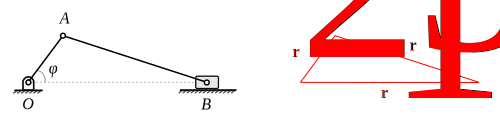
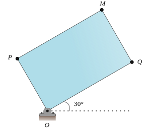
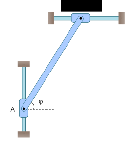

Análisis cinemático de mecanismos¶
w = symbols(“\omega”) r = symbols(“r_{BA}”) thBA = symbols(“\theta_{BA}”) va = symbols(“v_A”) vb = symbols(“v_B”) tha = symbols(“\theta_{A}”) thb = symbols(“\theta_{B}”)
VA = Matrix([vacos(tha), vasin(tha), 0]) VB = Matrix([vbcos(thb), vbsin(thb), 0]) W = Matrix([0,0,w]) RBA = Matrix([rcos(thBA), rsin(thBA), 0])
ecv = Eq(VB, VA + W.cross(RBA) )
solve(ecv, [vb, w])
Utilizando la librería cime¶
La librería cime es un conjunto de funciones y clases cuyo objetivo es facilitar el análisis cinemático de mecanismos planos.
Para instalar la librería debe ejecutar la siguiente instrucción en consola:
pip install git+https://github.com/iro-upgto/cime.git
Asegúrese que al momento de ejecutar estas instrucciones cuente con una conexión a internet.
Importando la librería¶
Para importar las funciones y clases de esta librería basta con ejecutar la siguiente instrucción:
from cime import *
La función vexp¶
La función vexp de la librería cime tiene el objetivo de representar un vector en forma rectangular a partir de su forma compleja exponencial. Por ejemplo:
O bien:
Vamos a definir primeramente algunas variables simbólicas:
K = symbols("K")
th = symbols("\\theta")
La función vexp puede aceptar tres argumentos, podemos solicitar la ayuda al respecto:
help(vexp)
Help on function vexp in module cime.core:
vexp(r, theta, j=False)
Parameters
----------
r : int, float, symbol
Vector magnitude
theta : int, float, symbol
Vector orientation
j : bool
¿Is multiplied by "j"?
Returns
-------
R : :class:`sympy.matrices.dense.MutableDenseMatrix`
Vector in rectangular coordinates
El primer argumento corresponde a la magnitud del vector, el segundo a la orientación (ángulo) del vector y el tercero corresponde a un argumento booleano que indica si el vector está multiplicado por la unidad imaginaria j, por default se asume que no.
Veamos el siguiente ejemplo:
vexp(K, th)

vexp(K, th, "j")

Naturalmente, no sólo funciona para valores simbólicos:
vexp(5, pi/2)

vexp(5, pi/2, "j")

Resolviendo problemas de análisis cinemático utilizando cime¶
En la figura se muestra un mecanismo de manivela-biela corredera. Se sabe que el ángulo \(\phi = 45°\) y que la manivela \(OA\) está rotando a una velocidad angular \(\omega_{OA} = 12\) rad/s, con esa información debemos determinar la velocidad angular de la biela \(AB\) y la velocidad del bloque en \(B\). Se conoce que \(\overline{OA}=100\) mm y \(\overline{AB}=300\) mm.
Si planteamos el lazo vectorial como se muestra en la figura podemos establecer la siguiente ecuación de posición:
Utilizando cime para establecer dicha ecuación, previamente definiendo los valores conocidos:
r2 = 100
r3 = 300
t1 = 0
t2 = rad(45)
ecpos = Eq( vexp(r2, t2) + vexp(r3, t3) - vexp(r1, t1), vexp(0,0))
ecpos

Resolviendo para los valores desconocidos, se tiene:
xpos = solve(ecpos)
xpos

Observe que Python nos devuelve dos soluciones, ¿cuál debemos tomar? ¡La que corresponda con la posición actual del mecanismo!
Por ejemplo, si tomamos la primera solución:
deg(xpos[0][t3]).evalf(), (xpos[0][r1]).evalf()

Se observa que los valores calculados no corresponden con lo esperable. Veamos ahora con la segunda solución:
deg(xpos[1][t3]).evalf(), (xpos[1][r1]).evalf()

Note que esta solución sí corresponde con lo que esperaríamos. Reescribimos la variable xpos para únicamente quedarnos con la segunda solución:
xpos = xpos[1]
Para el análisis de velocidad, derivando la ecuación de posición se tiene:
Ejemplos resueltos (método del movimiento relativo)¶
Para todos los ejemplos resueltos, asumiremos que hemos importado, previamente, la librería SymPy, de la siguiente manera:
from sympy import *
from sympy.matrices import Matrix
Y que hemos colocado la instrucción init_printing para renderizar las expresiones de SymPy:
init_printing()
Ejemplo 1. En la figura se muestra una placa rectangular de (300x180) mm, la cual está rotando a una velocidad angular constante de 65 rad/s en el sentido de las manecillas del reloj. Calcule la velocidad y aceleración de los puntos \(P\), \(Q\) y \(M\), para la posición esquematizada.
Solución
Comenzamos definiendo el vector de velocidad angular, el ángulo de 30° y las dimensiones de la placa:
w = Matrix([0,0,-65]) # Vector de velocidad angular
th = rad(30).evalf() # Ángulo en radianes
b = 300 # Base de la placa
h = 180 # Alto de la placa
Para la velocidad del punto \(Q\) sabemos que:
Entonces:
rQO = Matrix([b*cos(th), b*sin(th), 0]) # Vector r_Q/O
vQ = w.cross(rQO) # Velocidad del punto del punto Q
vQ

De manera similar se puede proceder para las velocidades de los puntos \(M\) y \(P\).
beta = atan(h/b)
tQ = th + beta # ángulo formado por el vector r_M/O con respecto a la horizontal
tP = th + pi/2 # ángulo formado por el vector r_P/O con respecto a la horizontal
r = sqrt(h**2 + b**2) # diagonal del rectángulo
rMO = Matrix([r*cos(tQ), r*sin(tQ), 0])
rPO = Matrix([r*cos(tP), r*sin(tP), 0])
vM = w.cross(rMO) # velocidad de M
vP = w.cross(rPO) # velocidad de P
vM.evalf(), vP.evalf()

Para las aceleraciones, dado que \(\omega\) es constante, entonces, \(\alpha=0\).
La aceleración del punto \(Q\) se puede calcular como:
Entonces:
alpha = Matrix([0,0,0]) # vector de velocidad angular
aQ = alpha.cross(rQO) + w.cross(w.cross(rQO)) # Aceleración de Q
aQ

De manera similar para las aceleraciones de \(P\) y \(M\):
aM = alpha.cross(rMO) + w.cross(w.cross(rMO))
aP = alpha.cross(rPO) + w.cross(w.cross(rPO))
aM.evalf(), aP.evalf()

Ejemplo 2. El bloque ubicado en \(A\) se desplaza a 100 mm/s hacia arriba en el instante en que \(\varphi = 60°\). Calcule la velocidad angular de la barra \(AB\) y la velocidad del bloque en \(B\). Considere que la barra \(AB\) mide 500 mm.
Solución
L = 500 # longitud de la barra AB (mm)
phi = rad(60).evalf()
VA = Matrix([0,100,0]) # vector de velocidad de A
vB = symbols("v_B") #
VB = Matrix([vB,0,0]) # vector de velocidad de B
wAB = symbols("\\omega_{AB}")
WAB = Matrix([0,0,wAB]) # vector de velocidad angular AB
RBA = Matrix([L*cos(phi), L*sin(phi), 0])
ecvr = Eq(VB, VA + WAB.cross(RBA)) # ecuación de velocidad relativa
ecvr

solve(ecvr) # resolviendo la ecuación de velocidad relativa